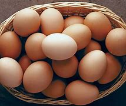

Ingredient Spotlight: Eggs

Overview
Description: Eggs are versatile ingredients rich in protein, commonly used in a variety of dishes.
Origin: Eggs have been consumed by humans for thousands of years, primarily from chickens.
Nutritional Information
| Nutrient |
Amount per 100g |
| Calories |
155 |
| Fat |
11g |
| Carbohydrates |
1g |
| Protein |
13g |
Health Benefits:
- High in protein and essential nutrients.
- Good source of choline for brain health.
Culinary Uses
Flavor Profile: Eggs have a mild flavor that enhances various dishes.
Cooking Methods: Used in boiling, frying, baking, and scrambling.
Common Dishes:
- Scrambled eggs
- Omelets
- Egg salad
Storage and Preparation Tips
Storage Guidelines: Store in the refrigerator to maintain freshness.
Preparation Tips: Allow eggs to come to room temperature for baking for better results.
Varieties and Substitutes
Types:
- Chicken eggs
- Duck eggs
- Quail eggs
Substitutes:
Flaxseed meal or applesauce can be used as egg substitutes in baking.
Fun Facts and Trivia
- Eggs come in various colors, including brown, white, and blue.
- The world record for the largest egg laid by a chicken is 12 ounces!
FAQs
Q: Are eggs healthy?
A: Yes, eggs are nutritious and provide high-quality protein.
Q: How long can I store eggs in the refrigerator?
A: Eggs can be stored for about 3-5 weeks in the refrigerator.